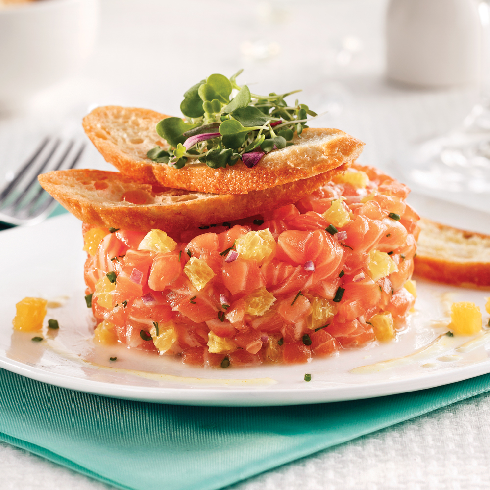

<mat-card class="recipe noBox" >
  <div class="recipe__favorite" fxLayout="row" fxLayoutAlign="space-between center" (click)="addOrRemoveFavorite()">
    <mat-icon>{{ recipeInFavorites ? 'favorite' : 'favorite_border'}}</mat-icon>
  </div>
  <div class="recipe__picture">
    
  </div>
  <mat-card-header class="recipe__header" fxLayout="column" fxLayoutAlign="space-between center">
    <mat-card-title class="recipe__header__name" [routerLink]="['/recipes', recipe.id]">
      {{recipe.name}}
    </mat-card-title>
    <mat-card-subtitle class="recipe__header__tags" fxLayout="row" fxLayoutAlign="space-around center">
      <span *ngFor="let tag of recipe.recipeTags">{{ tag.tag.name }}</span>
    </mat-card-subtitle>
    <div class="recipe__header__infos" fxLayout="row" fxLayoutAlign="space-between center">
      <wh-recipe-rating [rating]="recipe.avgReview" *ngIf="recipe.avgReview"></wh-recipe-rating>

      <span fxLayout="row" fxLayoutAlign="start center">
        <mat-icon>schedule</mat-icon>
        <span>{{ appService.formatTimer(recipe.cookTime) }}</span>
      </span>
      <!-- <span fxLayout="row" fxLayoutAlign="start center">
        <mat-icon>outdoor_grill</mat-icon>
        {{recipe.difficulty }}
      </span>
      <span fxLayout="row" fxLayoutAlign="start center">
        <mat-icon>star_outline
        </mat-icon>
        {{ appService.getAvgReview(recipe.recipeReviews) }}/5
      </span> -->
    </div>
  </mat-card-header>
  <mat-divider [inset]="true"></mat-divider>
  <mat-card-content class="recipe__content">
    <p matTooltip="{{ recipe.description }}">{{ recipe.description }}</p>
  </mat-card-content>
  <mat-divider [inset]="true"></mat-divider>
  <mat-card-footer class="recipe__footer" fxLayout="row" fxLayoutAlign="space-between center">
    <div class="recipe__footer__infos" fxLayout="row" fxLayoutAlign="space-between center">
      <div class="recipe__footer__infos__user" fxLayout="row" fxLayoutAlign="start center">
        
        <span class="recipe__footer__infos__user__nickname">{{ recipe.author.nickname }}</span>
      </div>
      <span class="recipe__footer__infos__date">{{ appService.formatDate(recipe.createdAt) }}</span>
    </div>
   
  </mat-card-footer>
</mat-card>

